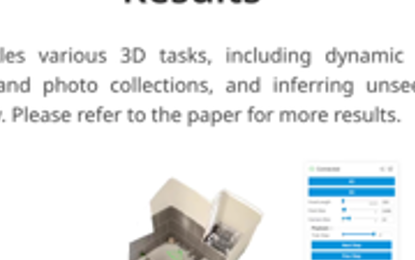
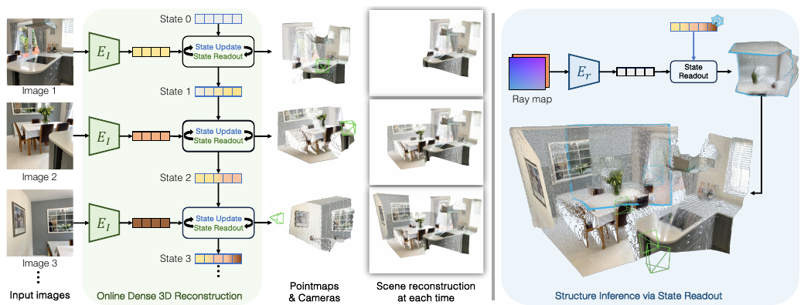

We present a unified framework capable of solving a broad range of 3D tasks. Our approach features a stateful recurrent model that continuously updates its state representation with each new observation. Given a stream of images, this evolving state can be used to generate metric-scale pointmaps (per-pixel 3D points) for each new input in an online fashion. These pointmaps reside within a common coordinate system, and can be accumulated into a coherent, dense scene reconstruction that updates as new images arrive. Our model, called CUT3R (Continuous Updating Transformer for 3D Reconstruction), captures rich priors of real-world scenes: not only can it predict accurate pointmaps from image observations, but it can also infer unseen regions of the scene by probing at virtual, unobserved views. Our method is simple yet highly flexible, naturally accepting varying length of images that may be either video streams or unordered photo collections, containing both static and dynamic content. We evaluate our method on various 3D/4D tasks and demonstrate competitive or state-of-the-art performance in each.
Humans are online visual learners. We continuously process streams of visual input, building on what we have learned in the past while learning in the present. Our prior knowledge enables us to interpret the world from minimal information; e.g., upon entering a new restaurant, it only takes a glance to start inferring its layout and atmosphere. But it doesn't stop there—as we accumulate more observations, we continuously refine our mental model of the 3D environment. This ability to reconcile our prior knowledge of the world with a continuous stream of new observations is crucial for functioning effectively in an ever-changing visual world. Building on these insights, we introduce an online 3D perception framework that unifies three key capabilities: 1) reconstructing 3D scenes from few observations, 2) continuously refining the reconstruction with more observations, and 3) inferring 3D properties of unobserved scene regions. We achieve these capabilities by integrating data-driven priors with a recurrent update mechanism. The learned prior enables our method to address challenges encountered by traditional methods (e.g., dynamic objects, sparse observations, degenerate camera motion), while the ability to continuously update allows it to process new observations online, and improve the reconstruction continuously over time. Specifically, given an image stream, our recurrent model maintains and incrementally updates a persistent internal state that encodes the scene content. With each new observation, the model simultaneously updates this state and reads from it to predict the current view's 3D properties, including an estimate of that view's dense 3D geometry (as a pointmap; a 3D point per-pixel in a world coordinate frame) and camera parameters (both intrinsics and extrinsics). Accumulating these pointmaps enables online dense scene reconstruction, as illustrated in Fig. 1. Additionally, our framework supports inferring unobserved parts of the scene: by querying the internal state with a virtual (unseen) view, parameterized as a raymap, we can extract the corresponding pointmap and color for the query view, as depicted in Fig. 2. Our framework is designed to be general and flexible, making it well-suited for training on an extensive collection of datasets and adaptable to diverse inference scenarios. During training, we leverage a wide variety of 3D data, including single images, videos, and photo collections with partial or full 3D annotations. These datasets span a broad spectrum of scene types and contexts—static and dynamic, indoor and outdoor, real and synthetic—enabling the model to acquire robust and generalizable priors. During inference, our recurrent framework naturally accepts varying numbers of images, and supports a wide range of input data settings: from streaming video to unstructured image collections, including wide-baseline or even non-overlapping images. Beyond static scenes, it seamlessly handles videos of dynamic scenes, estimating accurate camera parameters and dense point clouds for moving parts of the scene. We evaluate our method on various 3D tasks: monocular and consistent video depth estimation, camera pose estimation, and 3D reconstruction, achieving competitive or state-of-the-art performance in each. We also show that our method can infer previously unseen structures and continuously refine the reconstruction as new observations arrive.
Our unified framework tackles various 3D tasks, including dynamic scene reconstruction, 3D reconstruction from videos and photo collections, and inferring unseen structure. An example reconstruction is shown below. Please refer to the paper for more results.


Our approach takes as input a stream of images without any camera information. The image streams can come from either video or image collections. As a new image comes in through the model, it interacts with the latent state representation, which encodes the understanding of the current 3D scene. Specifically, the image simultaneously updates the state with new information and retrieves information stored in the state. Following the state-image interaction, explicit 3D pointmaps and camera poses are extracted for each view. The state can also be queried with a virtual view to predict its corresponding pointmap, capturing unseen parts of the scene. See Fig. 3 for our method overview. Our method takes a stream of images as input. For each current image, it is first encoded into token representation by a ViT encoder. We represent the state also as a set of tokens. Prior to seeing any image input, the state tokens are initialized as a set of learnable tokens shared by all scenes. The image tokens interact with the state in two ways: they update the state with information from the current image and read the context from the state, incorporating stored past information. We refer to these interactions as state-update and state-readout, respectively. This bidirectional interaction is implemented using two interconnected transformer decoders, which jointly operate on both image and state tokens. A learnable "pose token" is prepended to the image tokens, whose output captures image-level information related to the scene, such as ego motion. Within the decoders, the outputs from both sides cross-attend to each other at each decoder block to ensure effective information transfer. After this interaction, explicit 3D representation can be extracted. Specifically, we predict two pointmaps with corresponding confidence maps. These maps are defined in two coordinate frames: the input image's own coordinate frame and the world frame, respectively, where the world frame is defined as the coordinate frame of the initial image. Additionally, we predict the relative transformations between the two coordinate frames, or, the ego motion. All pointmaps and poses are in metric scale (i.e., meters). Although predicting these outputs may seem redundant, we found this redundancy simplifies training. It enables each output to receive direct supervision, and importantly, it facilitates training on datasets with partial annotations, such as those containing only pose or single-view depth, thereby broadening the range of usable data.
Leveraging past 3D experiences, humans can envision parts of a scene beyond what is directly observed. We emulate this ability by extending the state-readout operation to predict unseen portions of the scene from a virtual camera view. Specifically, we use a virtual camera as a query to extract information from the state. The virtual camera's intrinsics and extrinsics are represented as a raymap, a 6-channel image encoding the origin and direction of rays at each pixel. Given a query raymap, we first encode it into token representations using a separate transformer encoder. Then, the rest of the process aligns largely with what is described above. Note that, unlike in the state-image interaction, the state is not updated here, as the raymap serves solely as a query without introducing new scene content.
We would like to thank Haiwen Feng, Chung Min Kim, Justin Kerr, Songwei Ge, Chenfeng Xu, Letian Fu, and Ren Wang for helpful discussions. And we thank Brent Yi for his support on the interactive visualization. We especially thank Noah Snavely for his guidance and support. This project is supported in part by DARPA No.~HR001123C0021, IARPA DOI/IBC No.~140D0423C0035, NSF:CNS-2235013, Bakar Fellows, ONR, MURI, TRI and BAIR sponsors. The views and conclusions contained herein are those of the authors and do not represent the official policies or endorsements of these institutions.
@inproceedings{cut3r,
Author = {Qianqian Wang* and Yifei Zhang* and Aleksander Holynski and Alexei A. Efros and Angjoo Kanazawa},
Title = {Continuous 3D Perception Model with Persistent State},
Year = {2025},
booktitle={CVPR},
}